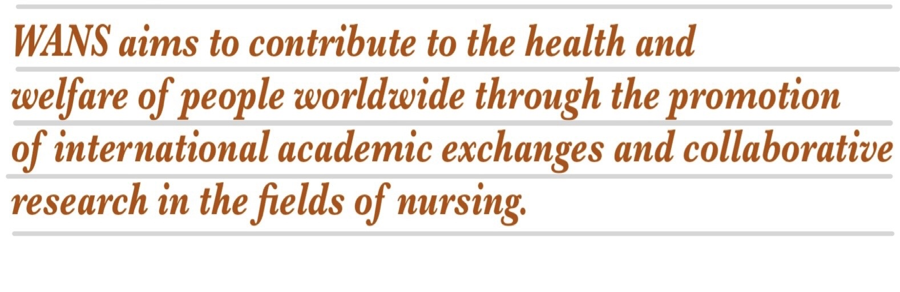

Purpose

Member Organizations
WANS membership is available to organizations or bodies that have nursing research as a priority and whose mission and vision is compatible with WANS.
Each WANS member organization has one vote on the Board of Directors.
Organizational membership in WANS is granted by a majority affirmative vote of the WANS Board of Directors.
Qualification for membership in the WANS can be revoked by a majority affirmative vote of the Board of Directors. A member organization which damages the reputation of or which acts in opposition to the goals of the Academy is subject to possible revocation.
Conferences
The conference of WANS shall be held once every two years.
2022.05.20
Early Career Researchers' Experiences during the COVID-19 Pandemic
will be hold on August. 9, 2022 via zoom meeting
>> More Info.
2021.11.06
The 7th International Nursing Research Conference of WANS will be held in
Oct. 18-19, 2022 at Taipei, Taiwan.
>> More Info.
2009.10.07
The World Academy of Nursing Science was founded on September 18, 2009.
>> Photo
>> Congratulatory addresses
2020.6.12
Dr. Noriko Katada reelected as the Chairperson of the board member.
>> More Info.
2020.12. 23
Japan Academy of Critical Care Nursing newly joins WANS in 2020.
>> More Info.
Copyright (C) 2008 World Academy of Nursing Science. All Rights Reserved.